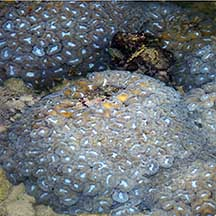
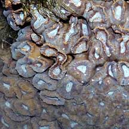
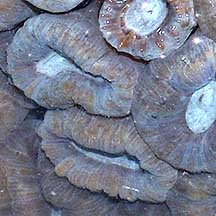
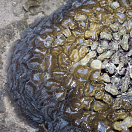
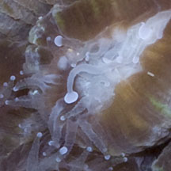
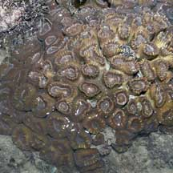
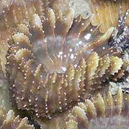
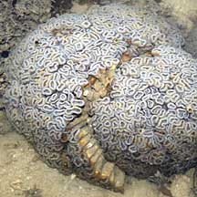
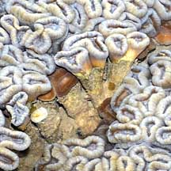

|
|
| hard corals text index | photo index |
| Phylum Cnidaria > Class Anthozoa > Subclass Zoantharia/Hexacorallia > Order Scleractinia > Family Merulinidae |
| Trumpet
coral Caulastraea sp.* Family Merulinidae updated Nov 2019 Where seen? These smooth pillows of hard corals with round to oval corallites are sometimes seen on some of our Southern shores. It was previously in Family Faviidae. Features: The colony appears to be boulder-shaped, those seen 10-20cm or larger. But the colony is not solid (massive). The corallites are branching and trumpet-shaped (phaceloid): long narrow column flaring out at the top to a circular or oval shape (1-2.5cm diameter). The branching corallites may be packed closely to one another, or spaced apart. They are arranged with the broad, flared portions facing out so the colony forms an overall spherical shape. The tissue is fleshy, smooth, sometimes with bands in a contrasting colour. Tentacles many short, slender with bulbous tips. Tentacles are seldom seen. The circular or oval top of the corallite resemble eyes particularly when highlighted by the fleshy tissue. This results in common names such as bullseye coral and cat's eye coral. Colours seen include beige, brown, blue and greenish or purplish. Hiding places: Usually hidden by the fleshy tissue, the 'hollow' structure of the branches provides hiding places for small animals deep within the coral. Sometimes confused with some species of Lobed brain corals (Lobophyllia sp.) that may also have branching corallites with circular openings. Other corals that may appear similar include: Barabattoia and some Favia species. More on how to tell apart hard corals with big rings and fleshy tissue. Status and threats: Caulastrea echinulata recorded for Singapore are listed as globally Vulnerable by the IUCN. Like other creatures of the intertidal zone, they are affected by human activities such as reclamation and pollution. Trampling by careless visitors, and over-collection also have an impact on local populations. |
 Kusu Island, May 04 |
 |
 |
|
 Raffles Lighthouse, Jul 06  Tentacles peeping out. |
 Kusu Island, Jun 04  |
 Beting Bemban Besar, Jun 09  Trumpet shaped corallites. |
*Species are difficult to positively identify without close examination.
On this website, they are grouped by external features for convenience of display.
| Trumpet corals on Singapore shores |
On wildsingapore
flickr
|
| Other sightings on Singapore shores |
| Caulastrea
species recorded for Singapore Danwei Huang, Karenne P. P. Tun, L. M Chou and Peter A. Todd. 30 Dec 2009. An inventory of zooxanthellate sclerectinian corals in Singapore including 33 new records **the species found on many shores in Danwei's paper. in red are those listed as threatened on the IUCN global list.
|
|
Links
References
|